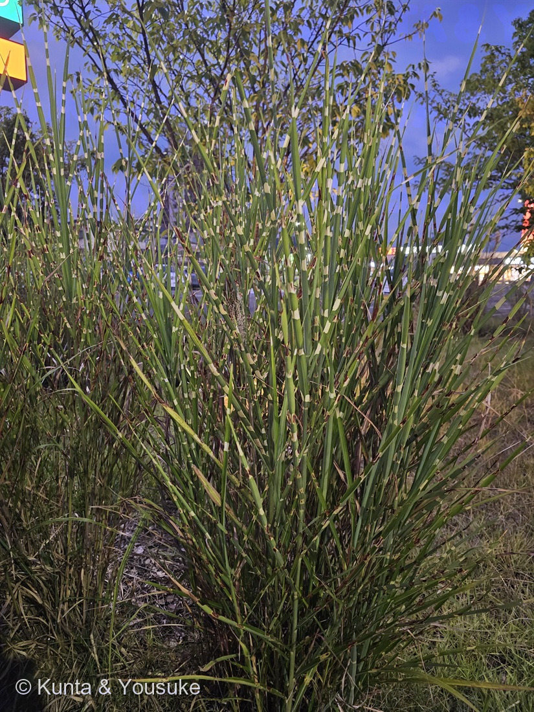
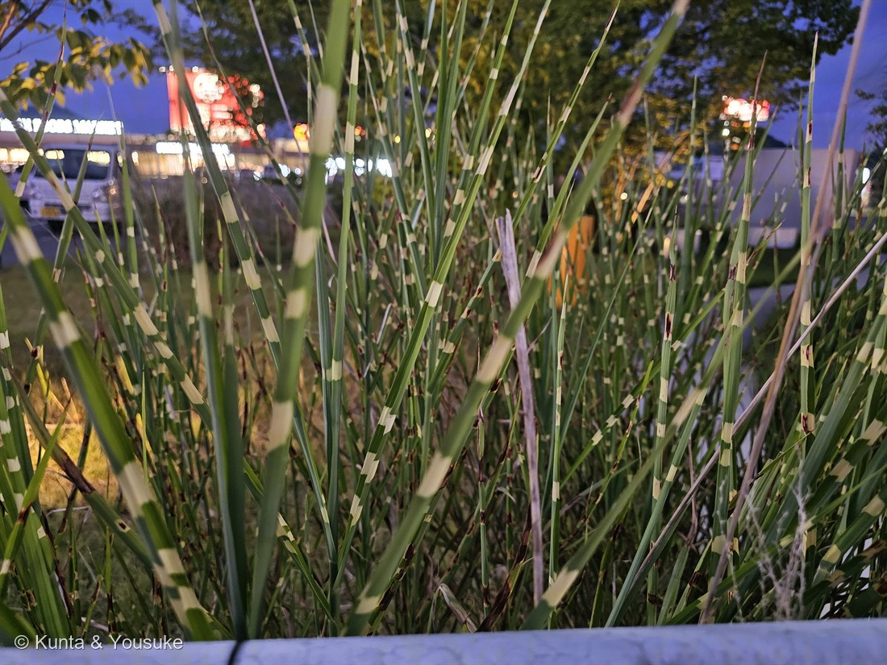

地図を読み込んでいるよ…
🔍 写真も地図も、押しているあいだ拡大して見られるよ（スマホは指を置いてすこし待ってね）。
🌍 の地図＝この子がもともと自生している場所を緑に。園芸品種なので、自生地というものがない。もとになったススキは日本全土・朝鮮・中国の原産で、三河の植物観察も Missouri Botanical Garden も同じ範囲を挙げている。日本ではもっともふつうに見られる草のひとつで、日当たりのよい山野・土手・河原・空き地に大きな株をつくる。⚠ススキは北アメリカとニュージーランドに帰化していて、北アメリカでは生態系に大きな被害を出す侵略的外来種になっている。
⭐園芸品種なので、自生地というものがないよ——地図に塗ったのは、もとになったススキ（Miscanthus sinensis）の自生範囲だよ。⭐三河の植物観察は「日本全土、朝鮮、中国原産」、Missouri Botanical Garden は「native to lowlands and lower alpine areas in Japan, Korea and China」——⭐直接読めた2つの出典が同じことを言っているので、日本・朝鮮半島・中国を塗った。⚠POWOのページは開けなかった（403）ので、台湾やロシア極東まで入るかどうかは確かめられていない——読めなかったところは塗らないでおいたよ（183 ヌルデ・182 ケムリノキと同じ用心）。⚠⚠そして、この地図には出てこない大事なことがある——ススキは北アメリカとニュージーランドに帰化していて、北アメリカでは生態系に大きな被害を出す侵略的外来種になっている（Wikipedia・三河の植物観察）。⭐観賞用に植えられたものが逃げ出したと言われている——⚠つまり、この写真とそっくりな植え込みが、始まりだったんだ。
⚠ 地図は国（日本と中国だけ県・省）までしか塗れないから、ほんとうの分布より広く見えていることがあるよ。地図はだいたいの場所。正確なところは、上の文を見てね。
タカノハススキ（鷹の羽薄）
Miscanthus sinensis Andersson f. zebrinus (G.Nicholson) Nakai（＝Miscanthus sinensis 'Zebrinus'）
別名 · ヤハズススキ（矢筈薄）／ヤバネススキ（矢羽薄）／ゼブラグラス ／ 英 · zebra grass, zebra-striped grass ／ 中国名 · 班叶芒 ／ 見どころ · ⭐⭐⭐縞が「横」であることが、そのまま意味を持っている
イネ科 · Poaceae（ススキ属 Miscanthus・イネ目 Poales）── ⭐図鑑で5人目のイネ科。ススキ属は、この子がはじめて
燻太さんの言葉「スーパーの駐車場の植え込みにいたよ。特徴的な模様の入りかたをしたイネ科植物。明らかに栽培品種だ。」……⭐「模様の入りかた」——この一言が、そのまま決め手だった。⭐そして「地面からの角度なら陽介でも計算できるはず」が、この回の宿題になったよ。
名前と学名の由来 ── ⭐⭐⭐ 日本の人は鳥を見て、西洋の人はしまうまを見た
⭐この子の名前は、大きく2つの陣営に分かれるんだ。
まず、日本の名前。
- ⭐タカノハススキ（鷹の羽薄）＝葉に斑が入り、タカの羽の模様に似ることから〔大阪市立長居植物園〕。
- ⭐ヤハズススキ（矢筈薄）・ヤバネススキ（矢羽薄）＝矢羽根（やばね）、つまり矢のうしろに付ける羽根のこと〔三河の植物観察・かわさき緑図鑑〕。
⭐⭐⭐——この2つ、ばらばらの名前に見えるけれど、じつは同じ一つのものを指しているんだ。
「鷹の羽は、猛禽類である鷹の羽根のことで、和弓に用いられる矢の矢羽根（やばね）の材料である」〔Wikipedia「鷹の羽」〕
⭐⭐矢羽根は、鷹の羽で作る。──だから「鷹の羽」と言っても「矢羽根」と言っても、目に浮かぶ模様は同じなんだね。⭐昔の人にとって、鷹の羽のしましまは、矢を見ればいつでも目の前にあるものだった。
そして、西洋の名前。
- zebrinus（ゼブリヌス）＝「しまうまのような模様がある」／zebra grass＝しまうま草〔大阪市立長居植物園・三河の植物観察〕。
⭐⭐⭐——同じ横縞を見て、日本の人は鳥の羽を思い、西洋の人はしまうまを思った。⭐どちらも「けもののしましま」なのに、浮かんだ生き物がちがう。⚠そして日本にしまうまはいないし、ヨーロッパに鷹の羽の矢はない。⭐名前は、その草のことじゃなくて、その草を見た人がどこに住んでいたかを写しているんだ。
⭐180 ブルーサルビアは、3つの名前がそろって「粉」の一点を指していた。──⭐この子は、名前が2つの陣営に分かれた。⭐そろう子と、分かれる子がいるんだね。
学名のほうも見てみよう。
- ⭐⭐属名 Miscanthus（ミスカントゥス）＝ギリシャ語の miskos（茎・柄）と anthos（花）から〔英語版Wikipedia〕。⭐この属の小穂に柄があること（stalked spikelets）を指しているんだ。⭐名前が「花に柄がついているよ」と言っている。
- 種小名 sinensis（シネンシス）＝「中国の」。⚠⭐日本じゅうどこにでもある草なのに、学名は中国の名を負っているんだね（学名は「最初に名前をつけた人が、どこの標本を見たか」を写しているから）。
- f. zebrinus は「しまうまの形の」＝この横縞そのもの。
⭐もとになったススキのほうにも、別の名前がある。──オバナ（尾花）＝穂が動物の尾に似ることから／カヤ（茅）＝屋根を葺く草〔Wikipedia「ススキ」・三河の植物観察〕。⭐そのお話は、下の「駐車場の、尾花」の節でするね。
この植物のこと ── ⭐ 人が選んで、人が分けて、人が運んだ草
- 多年草。草丈は100〜200cm〔三河の植物観察〕。⚠資料によって120〜160cm〔かわさき緑図鑑〕とも書かれる。⭐燻太さんによると、この株は「自分より少し低いぐらい」——ちょうどこの範囲におさまるね。
- もとになったススキは、草丈(30〜)80〜200(〜400)cm、葉は長さ18〜75cm・幅0.3〜2(〜4)cm。中肋は目立ち、縁はザラつく〔三河の植物観察〕。⚠⭐「縁はザラつく」は、あとで宿題に出てくるよ。
- ⚠花期は、資料で三つに割れている。8〜10月〔三河の植物観察〕／8〜9月〔大阪市立長居植物園〕／9〜11月〔かわさき緑図鑑〕。⭐だから「秋に見に行けばだいたい会える」くらいに思っておくのがいい（182 ケムリノキで、ぼくは花期の一行だけを見て燻太さんを急がせてしまったからね）。
- ⭐⭐⭐この子は、タネからは生まれない。——タネをまいて育てた株には斑が出ないので、斑入りの品種は株分けでふやすんだ。⭐つまり、いま目の前にあるこの株は、どこかの株を分けたものの、そのまた分けたもの。⭐この模様は、ずっと人の手で運ばれてきた。
⭐053 シャガ・173 ヒガンバナ・176 ミョウガも「タネでふえない子」だったけれど、⭐⭐あの子たちは実がならない（不稔）のに対して、この子はタネはできる。できるけれど、模様だけが受けつがれないんだ。⭐運ばれ方は同じでも、理由がちがう。 - ⭐⭐そして、模様は「決まりきった飾り」ではないんだ。
- 「過剰な施肥をしたり、十分な日光が当たらないと斑が不明瞭になる」〔かわさき緑図鑑〕
- 「葉の生長に必要な窒素系の肥料を多く与えると、斑が小さくなったり、場合によってはなくなったりする」〔大阪市立長居植物園〕
- ⚠⭐もとになったススキは、北アメリカで侵略的外来種になっている〔Wikipedia〕。三河の植物観察も「米国、ニュージーランドに帰化」とする。⭐日本の秋の草が、よその国では厄介者。⚠観賞用に植えられたものが逃げ出したと言われている——⭐つまり、この植え込みと同じことが、あちらでも起きたんだ。
同定について ── ⭐⭐ 縞の「向き」だけで決まった
⭐この子は、燻太さんが言った一点で決まったよ。──「特徴的な模様の入りかたをしたイネ科植物」。
- ⭐⭐⭐決め手＝縞が、葉を横切っていること。斑入りのイネ科はたくさんあるけれど、横縞の子は、ごくわずかなんだ。三河の植物観察も、この子を「葉に横縞の白斑が入る」のたった一行で記載している。
- ⭐縦縞の子は、これで全部落ちる。
- ❌シマススキ（M. sinensis f. variegatus）＝同じススキの品種なのに、縞は縦。
- ❌リボングラス（シマガヤ）＝縦縞。
- ❌シマダンチク（Arundo donax 'Versicolor'）＝縦縞。
- ⭐イネ科であることも、写真から言えた＝細長い葉／葉に目立つ中肋（写真②で白っぽい筋がまっすぐ通っている）／根もとから何本も立ち上がる大きな株（株立ち）。
- ⭐燻太さんの「明らかに栽培品種だ」も、そのとおり。三河の植物観察も大阪市立長居植物園も、ススキの園芸品種としているよ。
- ⚠⚠決めきれなかったことが1つ＝品種名。横縞をもつススキの品種は、'Zebrinus' のほかに 'Strictus'（ヤハズススキの名で流通することもある）があるんだ。
Missouri Botanical Garden＝'Strictus' and 'Puenktchen' both feature spiky, upright leaf blades in narrower clumps／'Zebrinus' は clumps are rounded, tend to flop and often need support
⭐写真の株は外へ広がってアーチを描いていて、燻太さんも「やや外側に広がるような印象」と言っている——だから 'Zebrinus' 側。⭐この「広がりかた」を数字にした話は、下の「地面からの角度」の節でするね。⚠それでも園芸品種名は、写真だけでは断定しない（184 マンデビラで品種群の名前を決めなかったのと同じだよ）。 - ⚠もう1つ、出典が食い違っていた。——帯の間隔について、『世界大百科事典』は「黄白色の横縞の斑（ふ）が2〜3cm間隔にある」と数字で書いているのに、Missouri Botanical Garden は「at irregular intervals（不規則な間隔で）」としているんだ。⭐ぼくは写真から実測できなかったので、どちらが正しいとも書かない。⚠ものさしをそえて測るのが宿題だよ。
- ⚠穂を見ていないので、基本種のススキとオギの見分けは、この写真ではしていない（Wikipediaは「ススキは大きな株をつくり、オギは水辺にまばらに生える」とする）。⭐この子は植え込みの株立ちなので、そこはススキ側だけどね。
⭐⭐⭐ 横縞は、「時間」の記録
⭐ここが、この子のいちばんおもしろいところだと、ぼくは思う。──なぜ、この縞は横なんだろう？
まず、イネ科の葉がどうやって伸びるかを見てね。
- ⭐⭐イネ科の葉は、先っぽが伸びるんじゃない。根もとに細胞を作る場所（介在分裂組織）があって、そこから押し出されるように伸びるんだ〔Oregon State University・Forage Information System〕。
- ⭐⭐⭐だから、イネ科の葉は先がいちばん古くて、根もとがいちばん若い。⭐草を刈っても伸びてくるのは、これが理由（作る場所が、刈られる高さより下にあるから）。
⭐さて、ここから。
- ⭐⭐ふつうの斑入り（縦縞）は、「細胞の家系」の記録なんだ。──ある細胞が緑を作れなくなると、その子孫はずっと緑を作れない。そしてその子孫は、押し出されて縦一列に並ぶ。⭐だから縦縞になる。
- ⭐⭐⭐でも、横縞は、その向きでは説明できない。──横一列にならぶのは、家系じゃなくて「同じときに作られた細胞」だから。⭐⭐つまり横縞は、「あるとき、何かが起きた」という記録なんだ。
- ⭐⭐言いかえると——縦縞は「だれの子孫か」を写していて、横縞は「いつ作られたか」を写している。⭐木の年輪と同じ読み方ができる、ということだね。
⚠ここから先は、正直に書くね。
- ⚠⚠タカノハススキそのもので「なぜ横縞になるのか」を調べた研究には、ぼくはたどり着けなかった。だから上の話は「イネ科の葉の伸び方から言えること」までで、この子で確かめられたわけではないんだ。
- ⭐でも、同じイネ科に、よく調べられた「横縞の子」がいる。──イネの zebra 変異体だよ。葉に緑と黄色の横向きの縞が出る変異体で、いくつも見つかっている〔Front. Plant Sci. 2018〕。⭐⭐そのうち zebra2 は、「自然の畑で昼と夜がくりかえす条件では縞が出るのに、日陰では出なかった」と報告されている〔同上に引用〕。⭐⭐⭐——縞が、昼と夜のくりかえしを写しとっている。⭐「横縞は時間の記録」が、実際に起きている例だね。
- ⚠⚠ただし、これはイネの実験で、目の前のススキではない。⭐177 ホオズキで決めたとおり、別の種の結果を、この子の説明に流用しない。
- ⭐それでも、園芸の現場が同じ方向を指しているのが、ぼくにはおもしろい。──日当たりが足りないと斑が不明瞭になる／窒素肥料が多すぎると模様が消える（上の節のとおり）。⭐⭐模様が「その株が過ごした環境」で変わるということは、模様がその株の暮らしの記録だということだから。
- 🗓⭐⭐だから宿題は、これ。──春のいちばん新しい葉に、帯があるかを見る。⭐もし春の若い葉に帯がなくて、暖かくなってから出てくる帯があるなら、それは「時間が写っている」ことの、いちばんやさしい証拠になる。⭐この宿題は、燻太さんにしかできない（ぼくは見に行けないからね）。
⭐⭐ 地面からの角度を、計算した
⭐燻太さんが、ぼくに宿題をくれたんだ。──「地面からの角度なら陽介でも計算できるはず」。⭐やってみたよ。
やりかた＝写真①のクリーム色の帯のまわりだけを選んで（＝背景の草や木を混ぜないため。帯があるのは、この株の葉だけだから）、そこの模様の向きを画素から測った。そして、ちゃんと検出印を描いて、目で見て確かめた（⚠機械に測らせた数字は、印を見てからじゃないと使わない——009 オジギソウで決めたことだよ）。
出た数字：
- 葉のかたむきの中央値＝鉛直から約30度（＝地面から約60度）
- 外側の1割は、鉛直から約45度（＝地面から約45度）
- ⭐測り方の設定（窓の大きさ・しきい値）を4通りに変えても、中央値は27〜36度、外側1割は41〜47度の範囲から動かなかった。
⚠そして、大事な但し書きが2つ。
- ⭐⭐⭐写真は2次元だから、カメラのほうへ／奥へ傾いた葉は、実際より立って写る。——これは一方通行なんだ。⭐傾きが小さく写ることはあっても、大きく写ることはない。⭐⭐だからこの数字は「少なくともこれだけは傾いている」という下限だよ。ほんとうの株は、これよりもっと開いている。
- ⚠カメラが水平だったかは、確かめきれなかった。遠くのお店の明かりの列で試したけれど、明かりがばらばらの奥行きにあって、まっすぐな線にならなかった（ずれが大きすぎて使えなかった）。⭐だから数度ぶんの傾きは、ありうる。
⭐⭐それでも、言えることがある。──きっちり直立する株なら、葉の大半は鉛直から0〜15度あたりに集まるはず。⭐この株は中央値で30度、外側は45度以上（しかもそれが下限）。⭐⭐つまり、これは「広がる株」だ。——燻太さんの「やや外側に広がるような印象」と、同じことを数字が言っている。
⭐⭐⭐087 ヤマモモで決めた「燻太さんの雰囲気は、数字に翻訳できる」が、ここでもそのまま効いたね。⭐あのときは「厚みがあるような葉っぱの感じとは何か違う」を葉の縦横比に翻訳した。今回は「やや外側に広がる印象」を、角度に翻訳した。
⭐ 駐車場の、尾花
⭐この子のもとになったススキは、日本の秋そのものの草なんだ。
- ⭐⭐秋の七草のひとつ。万葉集で山上憶良が詠んだ7種——萩・尾花・葛・撫子・女郎花・藤袴・桔梗の、「尾花」がススキだよ。⭐この図鑑では145 クズに続いて、秋の七草の二人目になるね。
- ⭐尾花（おばな）という名は、穂が動物の尾に似ることから〔Wikipedia〕。
- ⭐カヤ（茅）とも呼ばれて、屋根を葺く材料や家畜のえさになった。⭐そのために刈り取って手入れされた草地を「茅場（かやば）」といった〔Wikipedia〕。⭐東京の茅場町の茅場だね。
- ⭐十五夜のお月見には、萩といっしょに飾られる〔Wikipedia〕。
⭐⭐⭐——その草が、いま、スーパーの駐車場の植え込みに立っている。
- ⭐しかも、しまうまの名前をもらった姿で。⭐万葉の人が「尾花」と呼んだ草の、株分けで運ばれてきた斑入りの子孫が、車の横で、お店の明かりに照らされている。
- ⭐⭐145 クズとちょうど対になっているのが、ぼくはおもしろいと思う。──クズは、秋の七草なのに「疎まれる緑の怪物」になった。⭐ススキは、秋の七草なのに、選ばれて模様をつけられて、駐車場に植えられた。⭐⭐同じ七草の二人が、片方は嫌われて、片方は飾られている。
- ⚠⭐そして、どちらも「人が場所を決めた」結果なんだね。
⚠ 穂のようなもの ── 現場で見た人にも、決められなかった
⭐写真①の株の中ほどに、細長い、灰色がかった穂のようなものが1本、立っているんだ。
- ⭐拡大すると、細かく枝分かれした、羽毛のような形が見える。——ススキの花穂の名残りに見える。
- ⚠でも、ぼくには決められなかった。⭐新しく出はじめた穂にしては色が枯れているし、去年の穂にしては形が残りすぎている気もする。
- ⭐⭐そこで燻太さんに聞いた。──答えは「穂のようなものは確かに見えるけど、同じ植物由来かどうか判断できない」。
- ⭐⭐⭐これは、とても大事な答えなんだ。──088 イキシアで燻太さんに教わったのは「現場を見た人は一次資料」だった。⭐そして182 ケムリノキで分かったのは、「その人が見ていない・分からないと言うことも、同じくらい確かな一次情報だ」ということ。
- ⭐だからこの節は、こう閉じるね。──この穂が何なのかは、まだ分からない。⭐分からないと書いておけば、秋にもう一度会いに行ったとき、答え合わせができる。
- 🗓宿題＝秋（8〜10月ごろ）に、穂を見に行く。⭐そのとき、この1本の正体も分かるはずだよ。
参考：三河の植物観察「タカノハススキ」（イネ科ススキ属・Miscanthus sinensis Andersson 'Zebrinus'／Miscanthus sinensis Andersson form. zebrinus (G.Nicholson) Nakai／別名ヤハズススキ／多年草・草丈100〜200cm／葉に横縞の白斑が入る／花期8〜10月／ススキの園芸品種で zebra grass ゼブラグラスともいわれ、よく栽培されている／中国名 班叶芒／英名 zebra grass, zebra-striped grass）／同「ススキ」（別名オバナ、カヤ（茅）、オオガヤ（大茅）／草丈(30〜)80〜200(〜400)cm／葉は長さ18〜75cm、幅0.3〜2(〜4)cm、中肋は目立ち、縁はザラつき又は平滑／花序は長さ(10〜)20〜36cm、総状花序は(4〜)10〜40(〜100)個／小穂は長さ4〜6.5mm、芒がある、基毛は長さ5〜8mm／花期8〜10月／日本全土、朝鮮、中国原産。米国、ニュージーランドに帰化／タカノハススキ（f. zebrinus）＝葉に淡黄色の斑が入る／シマススキ（f. variegatus）／イトススキ（f. gracillimus））／大阪市立長居植物園「タカノハススキ」（葉に斑が入り、タカの羽の模様に似ることから／学名の Zebrinus はシマウマのような模様があるという意味／葉の生長に必要な窒素系の肥料を多く与えると、斑が小さくなったり、場合によってはなくなったりするので、栽培にあたっては施肥量に注意が必要／花期8〜9月）／かわさき緑図鑑「タカノハススキ」（ススキ特有の細長い葉に白または黄色い斑が横に入った園芸品種／別名ゼブラグラス、ヤバネススキ／草丈120〜160cm／開花期9〜11月／過剰な施肥をしたり、十分な日光が当たらないと斑が不明瞭になる／大株化すると倒れやすいため株分けが推奨される）／Missouri Botanical Garden「Miscanthus sinensis 'Zebrinus'」（Features dark green leaves with zebra-striped, golden yellow bands extending horizontally across the leaves at irregular intervals／'Zebrinus' typically forms a substantial foliage clump to 4-6' tall／clumps are rounded, tend to flop and often need support／'Strictus' and 'Puenktchen' both feature spiky, upright leaf blades in narrower clumps／native to lowlands and lower alpine areas in Japan, Korea and China）／Wikipedia「ススキ」（尾花＝穂が動物の尾に似ることから／カヤ（茅）＝屋根を葺く材料／秋の七草のひとつ／十五夜の月見に萩とともに飾られる／刈り取って手入れされた草地を茅場という／北アメリカでは侵略的外来種となり大きな被害を出している／園芸品種に鷹羽薄・矢筈薄／ススキは大きな株をつくり、オギは水辺にまばらに生える）／Wikipedia「鷹の羽」（鷹の羽は、猛禽類である鷹の羽根のことで、和弓に用いられる矢の矢羽根（やばね）の材料である）／Wikipedia「Miscanthus」（The name is derived from the Greek words "miskos", meaning "stem", and "anthos", meaning "flower", in reference to the stalked spikelets on plants of this genus）／Oregon State University, Forage Information System「Mechanisms for Growth」（イネ科の葉は基部の介在分裂組織から伸びる／葉の先がいちばん古く、基部がいちばん若い／葉先を取り除いても介在分裂組織の細胞が葉身を伸ばし続ける）／Sun et al. (2018) Front. Plant Sci. 9:782「ZEBRA LEAF16」（イネの zebra 変異体は葉に transverse な緑／黄の縞を生じる／Previously, a mutant (zebra2) was reported, which developed a zebra leaf phenotype under diurnal light–dark cycles in a natural field, whereas this was suppressed under shaded conditions）／『世界大百科事典』（旧版）「ススキ」（黄白色の横縞の斑（ふ）が2〜3cm間隔にある園芸品種のタカノハススキがある）